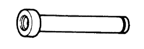
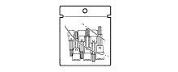
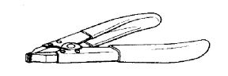

БЛОК МЕХАНИЧЕСКОЙ ТРАНСМИССИИ > ПОВТОРНАЯ СБОРКА > Подготовка

|  | 09309-35010 | Оправка заднего подшипника трансмиссии |
 | 09316-60011 | Оправка подшипников трансмиссии и раздаточной коробки |
 | (09316-00011) | Трубчатая оправка |
| 09710-30050 | Оправка втулки рычага подвески | |
 | 09817-16011 | Ключ для снятия датчика заднего хода на трансмиссии |
 | 09950-60010 | Комплект оправок |
| (09951-00300) | Оправка 30 | |
| (09951-00520) | Оправка 52 | |
 | (09952-06010) | Переходник |
 | 09950-70010 | Комплект сменных рукояток |
 | (09951-07100) | Рукоятка 100 |
| Фирменный герметик Toyota 1281, Three Bond 1281 или аналогичный | |
| Фирменный герметик 1344 от компании Тойота, Three Bond 1344 или аналогичный |
| Нутромер | - |
| Индикатор часового типа | - |
| Комплект плоских щупов | - |
| Микрометр | - |
| Универсальная консистентная смазка | - |
| Пластмассовый молоток | - |
| Пресс | - |
| Динамометрический ключ | - |
| V-образные призмы | - |
| Штангенциркуль | - |
|  | 09010-3C120 | Набор торцевых головок "TORX" | - |
 | (09013-1C130) | Торцевой ключ с головкой "TORX" T40 T-типа | - |
 | 09051-1C410 | Бородок с тонким цилиндрическим концом 5 | - |
|  | 09905-00012 | Съемник пружинных стопорных колец № 1 | - |
| Параметр / Устройство | Объем | Классификация |
| Масло для механической трансмиссии | 2,2 литра (2,3 кварты США, 1,9 английской кварты) | API GL-4 или GL-5 SAE 75W-90 |